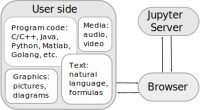

Idea of E-assessment
Our project concentrates on development of a system for E-assessment that would cover the whole process of study:
from homework to exams. Now a lot of software is used for homework during the semester, but exams
are still pen and paper. It is important to change the workflow in such a way
that students would use the same software tools for all assignments, tests and exams,
because work during the semester plays a significant role in exam peparation.
Another important goal of our project is a development of an AI assistant for grading assessments
and exams in the fields computer science, electrical engineering, physics and
other technical disciplines. It can allow professors more time for other teaching activities and provide
students with faster and less biased feedback on their work.
We focus on automated grading of the following answer types:
- program code
- formulas
- short text
- pictures (in the later versions)
The task of program code autograding is easily solvable by writing tests. Formulas checking is also easy to generalize and
automate, but text and picture grading are harder tasks.
Automated short answer grading
(
ASAG)
is a form of automated grading along with automated essay and fill the gap gradings. This answer type normally
consists of several sentences – from one sentence to one paragraph. In general one is concerned neither with writing style nor with spelling or grammar
in ASAG. However, we are going to add a feature that would allow the professor
who conducts a test to set the strictness of the evaluation: he or she should be able
to set if the answers with misspelled words, especially specific terms, should be accepted.
The teacher should also be able to estimate how large is the range
of synonyms that the student can use.
As for the result of the grading, it is important to provide not only the grade, but a
level of certainty of the grading and in the perfect case – generate the comments to
each graded answer.
Software
The autograding system will be integrated into open-source system for creating and grading assigments
"nbgrader" combined with "Jupyter Notebook" and other
"Jupyter Notebook"-compatible libraries.
"Jupyter Notebook" is a web-based application that one can use to
create textual and programming documents – the assignments in our case.
In the picture below you can find the workflow for the its usage:

"nbgrader" allows to choose if the assignment can be graded manually or automatically.
Now the system allows only code assignments autograding, but we are going
to extend it in such a way that it is possible to autograde formulas, natural language answers and pictures as well. An
example of "nbgrader" usage is shown below:

One can familiarize oneself with nbgrader with the following video.